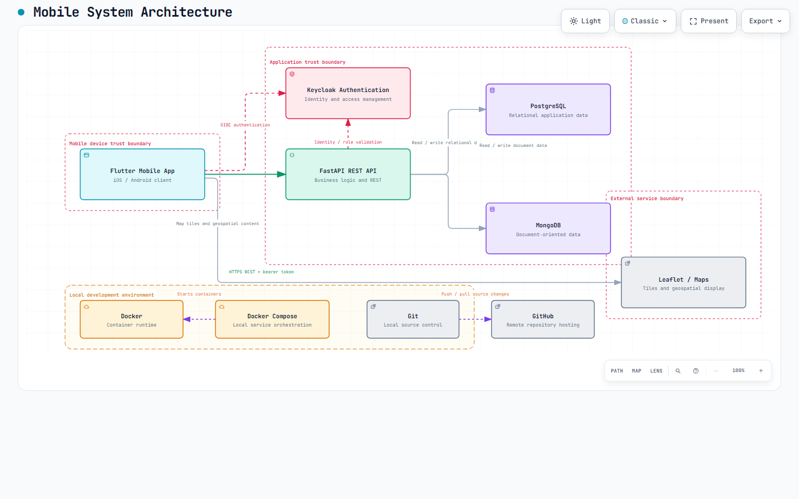
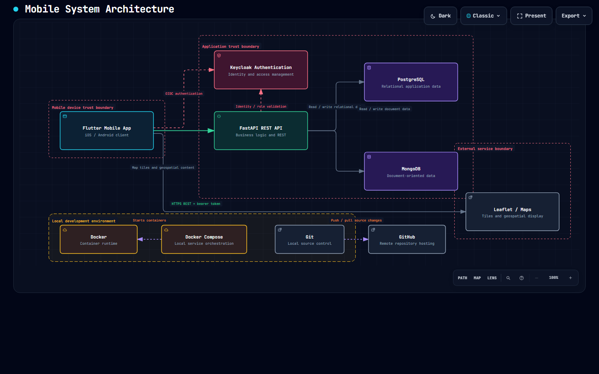

Vista previa principal
Captura general del modelado arquitectónico en modo claro.

Este repositorio centraliza la documentación, los diagramas interactivos, las evidencias visuales y la entrega de cada práctica desarrollada durante la materia. La idea es crear un espacio ordenado y profesional para ir acumulando todas las entregas futuras.
Acceso rápido a la entrega actual y a la evolución del portafolio académico.
Esta práctica consistió en modelar la arquitectura general del proyecto integrador, identificando sus capas principales, servicios, autenticación, almacenamiento de datos, flujos de integración y la estructura conceptual del sistema.
El objetivo fue representar visualmente la solución académica mediante un diagrama interactivo, con una organización clara de componentes y una visión profesional del proyecto para su presentación y documentación.
Esta práctica consistió en generar el Business Model Canvas interactivo de Spotify, una herramienta multiplataforma de streaming, estructurando un prompt para Archify, revisando el modelo obtenido y editando el prompt para mejorar el resultado.
El proceso documenta dos iteraciones del prompt: la versión inicial con errores de composición y legibilidad, y la versión mejorada que pasó la validación showcase con 9/9 verificaciones, 0 errores y 0 advertencias.
Capturas del proyecto para revisión rápida de la práctica actual.
Captura general del modelado arquitectónico en modo claro.

Versión en modo oscuro para revisión de contraste y presentación.

La organización actual del proyecto está enfocada en las prácticas 02 y 03 y en el crecimiento profesional del portafolio.
Resumen principal del repositorio y navegación general.
Arquitectura del proyecto integrador: documentación, diagrama interactivo y evidencias.
Business Model Canvas de Spotify: prompts, modelo interactivo, JSON y evidencias.
Publicación y acceso rápido a las prácticas desde el navegador.